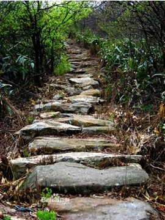
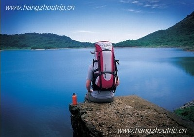

发信人: xiaoyemeizi (小野妹子), 信区: outdoor
标 题: 吴越古道-浙西天池-天龙峡谷两日穿越
发信站: 饮水思源 (2013年10月31日00:16:57 星期四)
【线路概况】
简介：
吴越古道全长约35公里，为五代十国时期吴越(浙江)与南唐(安徽)的主要通道。顺吴越古
道石板路台阶而上，一路溪流陪伴，瀑布奏鸣，曲径通幽，跌宕起伏，天地人合一，似在
画中游。约2—3个小时到达千倾关，千顷关为两块巨大而光滑的花岗岩构成，像门一样挡
在眼前，这一处天然石门，高近4米，厚约3米，宽可两人并行，其势“一夫当关，万夫莫
开”。登上石门，拔开石墙上面的杂枝，曼延起伏的两翼石墙，是古城墙防守工事。
 screen.width - 200){this.width = screen.width - 200}">
“江南第一池”—浙西天池。山水奇秀，风光独特的浙西天池位于海拔1100米的千顷山巅
，湖水清洌幽蓝，水天一色，山峦缓伏，视野开阔，是国家一级保护动物梅花鹿的主要栖
息地。天池四周低山环列，芳草鲜美，泉流淙淙，小涧纵横，唯独中间形成一坦荡的盆地
，呈山山朝千顷，水水往池流之势。浙西天池水面面积达900亩，是目前江南地势最高、面
积最大的湖泊之一。可谓“神池浩渺，天镜浮空”。因此，浙西天池又被称为“江南第一
池”。站在湖边，极目远眺，顿感心旷神怡。风平浪静的池水，浩淼一碧，清澄甘洌，掬
手可饮，在日月斜晖的映照下，似一面硕大无比的镜子放置于此。
screen.width - 200){this.width = screen.width - 200}">
蓝天、白云、山峦、野花……尽倒映于湖水之中；山风起时，碧波荡漾，倒影不时晃动，
呈现出幕幕变化无穷的幻景；而“鸟在水中飞，鱼在天上游”的奇景，更叫人拍手叫绝。
正如宋朝著名诗人章槱游玩千顷山时所题：一池春水应江潮，中起沙鸥数尺高。谁说风云
远朝市，乱山深处亦波涛。千顷山第二高峰乐利峰巍峨挺拔于浙西天池东北侧，海拔1363
米。《昌化县志》（1924年版）所载：“乐利峰在千顷山左，壁立孤峭，上可望钱塘江，
背极芜湖县，峰峦特秀，石壁峭立百余丈，飞泉自山崖下泻，四时不竭。石山莎草，厚如
茵褥，若龙须然。山高而险峻，春冬雾气，白昼如夜”。此载，已足以让人领悟到此峰的
大概。此时极目远眺，真叫人有“咫尺之间，尽收千里之胜”之感。
 screen.width - 200){this.width = screen.width - 200}">
【出行时间】
11月8晚出发-11月10日晚返回
【线路难度】★★（难度五星最高）。
【风景指数】★★★★（最高为五颗星）
【成员组成】
成员总人数：33人（包括领队等）
领队：张硕
副领队：杨志鹏
押队：娄琪琛
【行程安排】
第一天（11月8日）：
下午6点： 于庙门集合，上车前调整好装备。出发并短暂休息后，按协会传统大家
会有一些破冰活动，消除大家初次见面之间的隔阂。
第二天（11月9日）：
凌晨左右： 抵达万家小坞，扎营休息；
早7点： 起床，吃早饭；
早8点： 收拾完毕，拔营出发；
中午11点到12点：登顶乐立峰，初次看到天池；
并走到舒适的地方就休息吃自带冷餐；
下午3点： 到达天池边营地，扎营、做饭、游戏聊天
晚上可能有篝火(视天气时间而定）。
第三天（11月10日）：
早7点： 起床，吃自带早餐（热餐）；
早8点半： 收拾完毕，准备下山，经过天池峡谷；
中午12点左右： 坐车到龙岗，腐败；
下午2点： 乘车回校，晚6点到达庙门口。
【费用情况】
车费：￥140
门票：￥30
营地费用：￥10
保险：￥10
腐败餐费：￥30
装备：￥50（帐篷￥20，背包￥15，防潮垫加睡袋￥10，气罐加炉头￥5。自己有装备可退
个人装备部分）
总计：会员270/人，非会员300/人
【报名】
大家还在等什么呢？赶紧加入大自然的怀抱吧！
报名方式：
编辑短信“姓名+性别+年级+学号+是否为会员+是否有户外经历（有，请注明，否则视作无
户外经历）”至 娄同学 18817554528
并请留意最近协会召集短信，BBS中outdoor版，人人主页的野协召集帖等；
如有疑问仍然可以与娄同学联系，确定人员后，我们会择时（计划在下周二、周三）召开
准备会，进行分组等具体安排，请耐心等待通知。
还等什么呢？赶快报名吧！
【注意事项】
1.以上行程为基本行程，领队有权根据天气、队员状态等情况调整活动计划，不承担由此
造成的损失和责任；
2.野外活动不同于一般旅游，参加活动的队员须听从领队和向导的组织安排，严禁野外用
火吸烟，严禁擅自离队，所有活动安全第一，对于无视指挥所造成的后果由自己负责；
3.无论什么时候，一旦觉得事情应付不来，就要讲出来。艰难的路段最好请人帮助，甚至
放弃不爬，也比发生危急情况要好；
4.登山应发扬团队精神，途中留意同伴情况，危险地段互相提醒或协助通过；
5. 迷路时应折回原路，或寻找避难处静待救援；除保持体力外，并安抚队员平稳情绪；
6.提倡环保，注意保护环境，请将垃圾带离及小心用火，切勿乱丢烟蒂，引起山火；
7. 安全第一，切忌个人英雄主义，要量力而为，集体活动以大局为重，不搞个人主义，不
得单独行动；
8.请守时，对自己负责，对他人负责。
--
Where R U，圣德太子？
※ 来源:·饮水思源 bbs.sjtu.edu.cn·[FROM: 58.196.131.8]
※ 修改:·xiaoyemeizi 于 2013年10月31日00:32:53 修改本文·[FROM: 58.196.131.8]
|